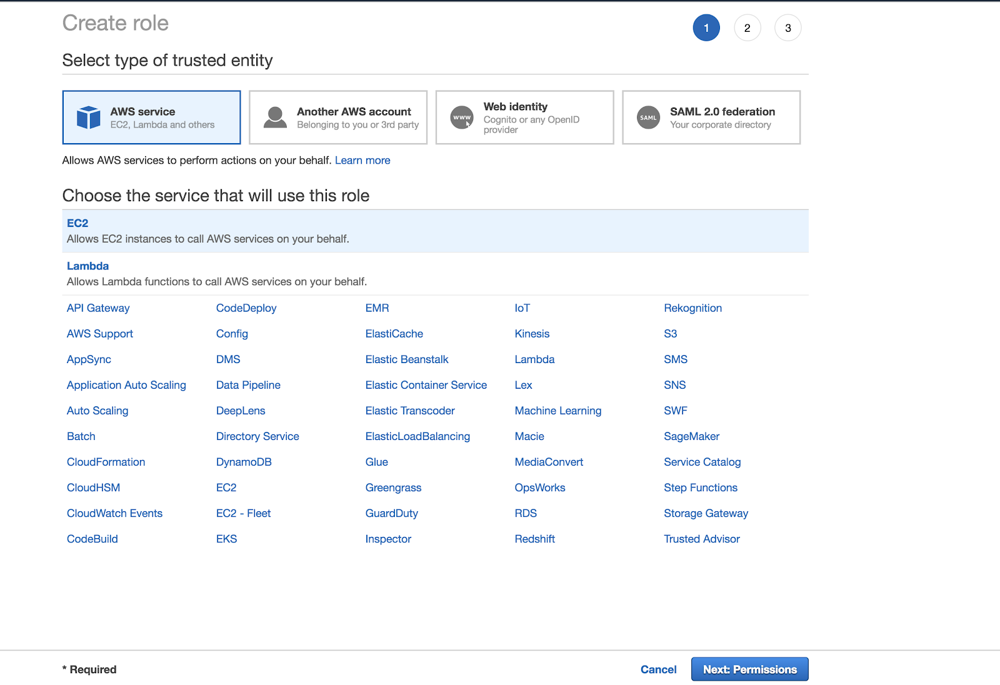

Set up AWS authentication for SageMaker deployment
This article describes how to set up instance profiles to allow you to deploy MLflow models to AWS SageMaker. It is possible to use access keys for an AWS user with similar permissions as the IAM role specified here, but Databricks recommends using instance profiles to give a cluster permission to deploy to SageMaker.
Step 1: Create an AWS IAM role and attach SageMaker permission policy
In the AWS console, go to the IAM service.
Click the Roles tab in the sidebar.
Click Create role.
Under Select type of trusted entity, select AWS service.
Under Choose the service that will use this role, click the EC2 service.
Click Next: Permissions.
In the Attach permissions policies screen, select AmazonSageMakerFullAccess.
Click Next: Review.
In the Role name field, enter a role name.
Click Create role.
In the Roles list, click the role name.
Make note of your Role ARN, which is of the format arn:aws:iam::<account-id>:role/<role-name>.
Step 2: Add an inline policy for access to SageMaker deployment resources
Add a policy to the role.
Click .
Paste in the following JSON definition:
{ "Version": "2012-10-17", "Statement": [ { "Action": [ "s3:PutObjectAcl", "s3:PutObjectTagging" ], "Resource": [ "arn:aws:s3:::mlflow-sagemaker-*-<account-id>", "arn:aws:s3:::mlflow-sagemaker-*-<account-id>/*" ], "Effect": "Allow" }, { "Action": [ "iam:GetRole" ], "Resource": [ "arn:aws:iam::<account-id>:role/<role-name>" ], "Effect": "Allow" }, { "Action": [ "ecr:DescribeRepositories" ], "Resource": [ "arn:aws:ecr:*:<account-id>:repository/*" ], "Effect": "Allow" } ] }
These permissions are required to allow the Databricks cluster to:
Obtain the new role’s canonical ARN.
Upload permission-scoped objects to S3 for use by SageMaker endpoint servers.
The role’s permissions will look like:
Step 3: Update the role’s trust policy
Add iam:AssumeRole access to sagemaker.amazonaws.com.
Go to Role Summary > Trust relationships > Edit trust relationship.
Paste and save the following JSON:
{ "Version": "2012-10-17", "Statement": [ { "Effect": "Allow", "Principal": { "Service": "ec2.amazonaws.com" }, "Action": "sts:AssumeRole" }, { "Effect": "Allow", "Principal": { "Service": "sagemaker.amazonaws.com" }, "Action": "sts:AssumeRole" } ] }
Your role’s trust relationships should resemble the following:
Step 4: Allow your Databricks workspace AWS role to pass the role
Go to your Databricks workspace AWS role.
Click .
Paste and save the following JSON definition:
{ "Version": "2012-10-17", "Statement": [ { "Action": [ "iam:PassRole" ], "Resource": [ "arn:aws:iam::<account-id>:role/<role-name>" ], "Effect": "Allow" } ] }
where account-id is the ID of the account running the AWS SageMaker service and
role-name is the role you defined in Step 1.
Step 5: Create a Databricks cluster instance profile
In your Databricks workspace admin settings, go to the Security tab, then click Manage next to Instance profiles.
Click Add instance profile.
Paste in the instance profile ARN associated with the AWS role you created. This ARN is of the form
arn:aws:iam::<account-id>:instance-profile/<role-name>and can be found in the AWS console:Click the Add button.
For details, see Tutorial: Configure S3 access with an instance profile.
Step 6: Launch a cluster with the instance profile
See Instance profiles.